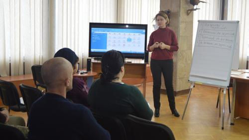
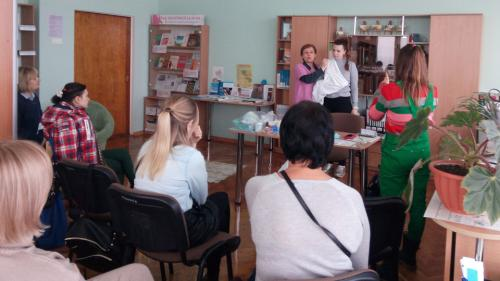
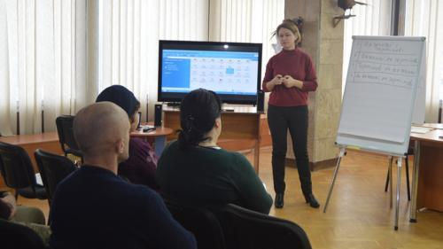
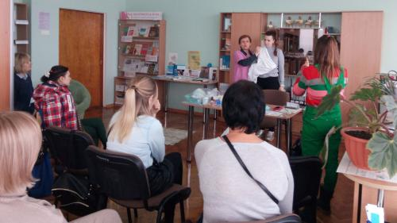
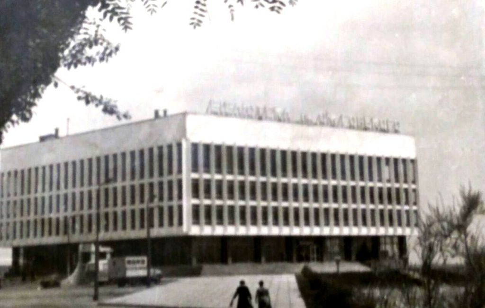
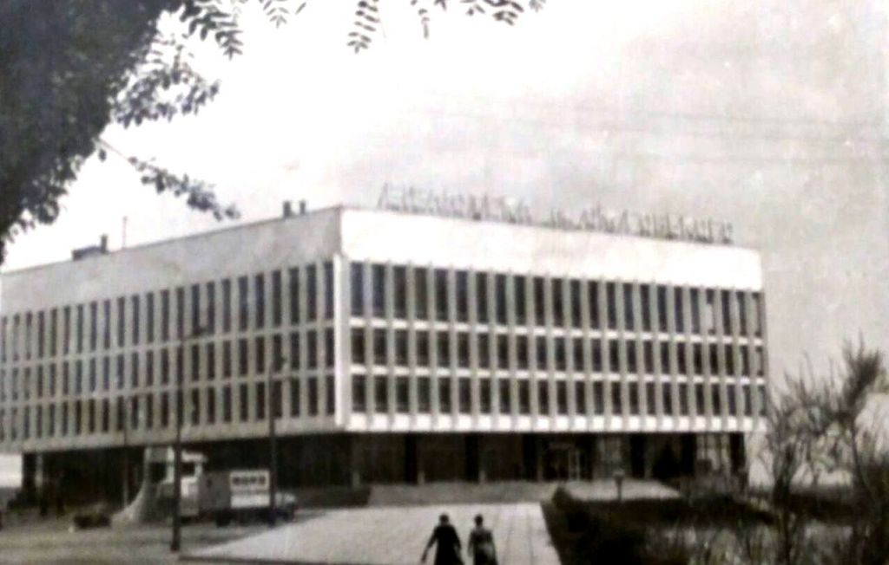

Історія бібліотеки: Шлях від громадської до наукової
Заснована 18 червня 1872 року як громадська, Херсонська обласна універсальна наукова бібліотека стала однією з перших загальнодоступних провінційних книгозбірень в Україні.

Своїм народженням бібліотека зобов'язана прогресивній інтелігенції міста. Ідея щодо її створення належить братові знаного художника Миколи Ге – Григорію Миколайовичу. Цю ідею підтримали міська влада і найбільш передові з впливових городян. В число засновників так званого бібліотечного товариства поряд з ентузіастами увійшов і місцевий губернатор генерал Сократ Іванович Старинкевич.
Завдяки енергійності і знанням людей, що увійшли до першого складу дирекції,бібліотека успішно розвивалася.
Вже в 90-ті роки ХІХ ст. в Херсоні, де не було жодного вищого навчального закладу, сформувалося громадське книгосховище, яке за складом своїх фондів займало сьоме місце в імперії, а за кількістю видаваних книг – друге, поступаючись лише Харківській публічній бібліотеці. Фонди були надзвичайно багаті.

В 1897 р. було побудовано спеціальне приміщення за індивідуальним проектом академіка-архітектора М. К. Толвінського (вул. 21 Січня, 24). В цьому будинку бібліотека розміщувалась до 1987 року.
Під час та після громадянської війни бібліотека спрямувала свої зусилля на культурно-просвітню роботу і тим самим визначила своє місце в житті міста: її працівники брали участь у ліквідації неписьменності, надавали пересувні бібліотеки військовим частинам тощо. В 1923 році бібліотека була реорганізована в державну центральну міську і переведена на державний бюджет.
Оцінку діяльності книгозбірні на початку 30-х років дав відомий письменник Б. А. Лавреньов у своєму листі:
"...У 1932 році, відвідавши рідне місто, я побував, безперечно, і у моїй першій академії... Нові бібліотечні працівники... бережно зберегли цю цінну спадщину... і повели справу далі, зміцнюючи бібліотеку і розширюючи її фонди... Бібліотека стала дійсним здобутком усього населення Херсона...".
У 1941 році книжковий фонд бібліотеки нараховував понад 300 тис. томів, ним користувалося майже 10 тис. читачів. У період фашистської окупації бібліотека деякий час працювала, проте фонд і майно були пограбовані окупантами і місцевими мародерами. Література, яка не відповідала духу тимчасового режиму, знищена. Втрачено більше 215 тис. книжок. Завдано збитків на 740 тис. крб. (у старому обчисленні).
Після звільнення розпочалася робота по відродженню закладу. В 1944 році у зв'язку з утворенням Херсонської області бібліотека стала обласною. З 1966 року вона – наукова, а у 1984 році їй присвоєно статус універсальної наукової бібліотеки.
На початку 1987 року бібліотека переїхала в нове приміщення на мальовничому березі Дніпра. Відкрилась нова сторінка в її історії.
 

Відзначаючи великі заслуги видатного письменника і академіка Гончара Олеся Терентійовича перед українським народом, Кабінет Міністрів України 18.02.1997 р. постановив присвоїти Херсонській обласній універсальній науковій бібліотеці ім'я Олеся Гончара (Постанова №173 від 18 лютого 1997 року).
І це не випадково, адже не тільки творчість Олеся Терентійович пов'язана з Херсонщиною, а й його громадська діяльність. Він кілька разів обирався депутатом Верховної Ради УРСР саме по виборчих округах Херсонщини, завжди допомагав мешканцям нашого краю у вирішенні різних життєвих проблем, часто відвідував область (детальніше про це можна прочитати у проєкті "Гончар і Херсонщина"). Саме завдяки турботі Олеся Гончара було побудоване сучасне приміщення нашої бібліотеки.